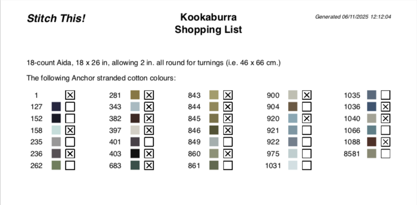

This window enables you to keep track of left-over threads from previous projects. You can also use it to browse the colour-range(s).
It's utilised by the app when generating the Shopping List - where it will report any threads on the list that can be sourced from your spares.

Here you can see that the colours marked with an X were found in the Spares database, and therefore you do not need to buy skeins of this colour to get the project started.
You can browse or update this at any time - you don't have to wait until you need to generate a new project. Those colours flagged on the Shopping List are not automatically subtracted from your Spares Manager totals - you will have to select the Decrement Spares Counts option on the Generate tab to do this.
Select a thread manufacturer and range from the dropdowns at the top of this window. The colours in that range are then displayed, with the Colour No alongside. The column to the right, labelled Spares, can be changed to enter how many left-over skeins you have for a colour. To open it up for editing, click on the desired field in the Spares column, and press Enter (↩). You can enter decimal fractions in multiples of a quarter (e.g. 1.25) if you wish.
Once you have been through and entered all your spares, click the Update button, and the database is updated.